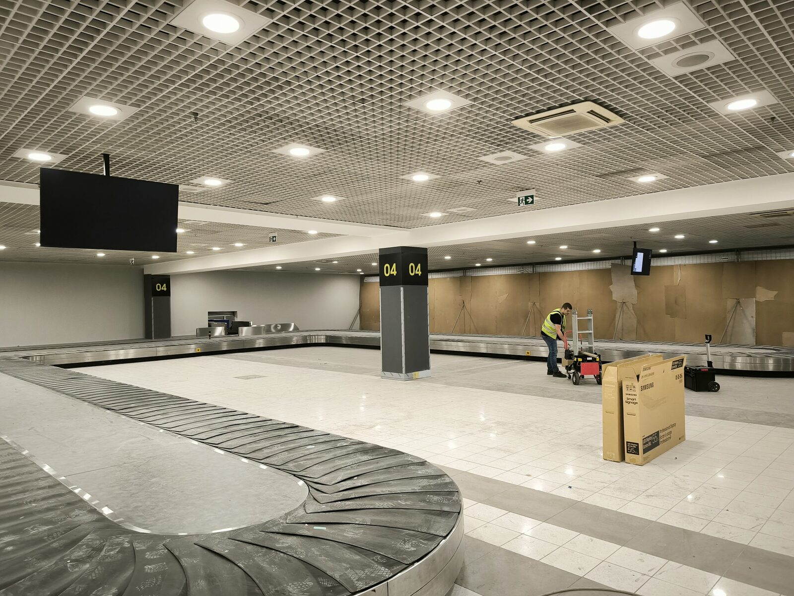
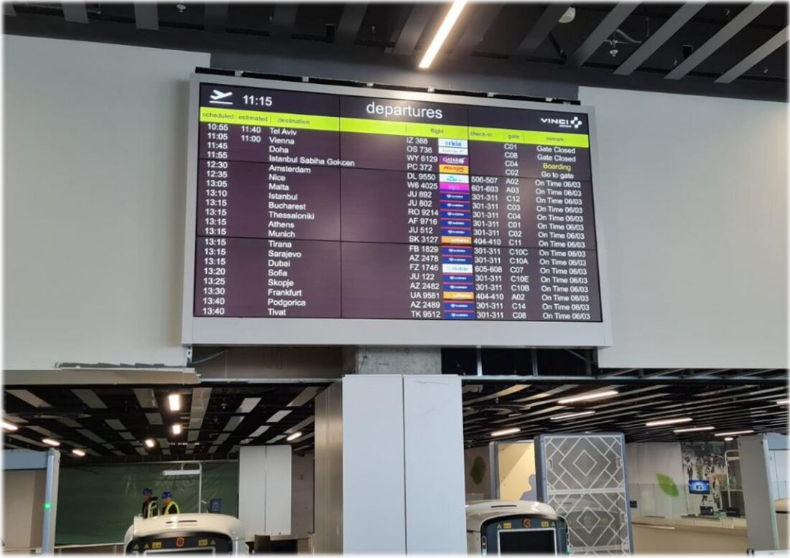
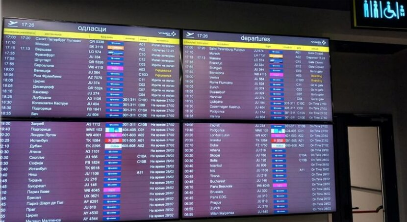
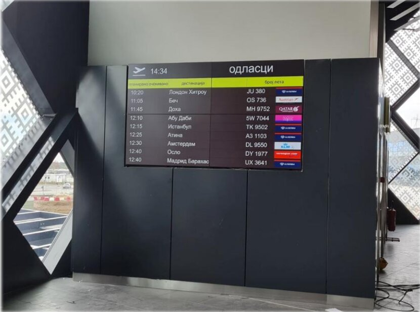
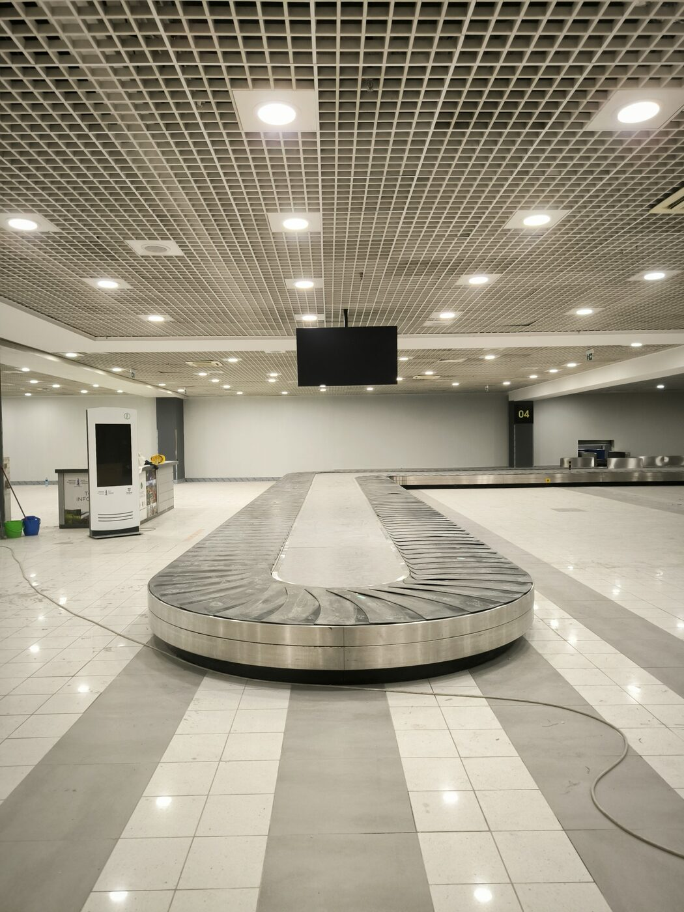
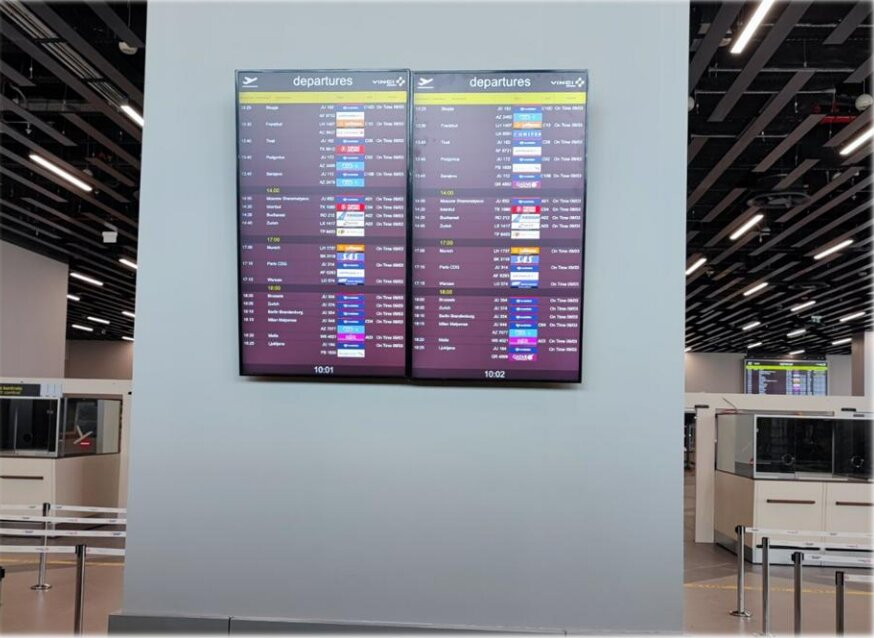
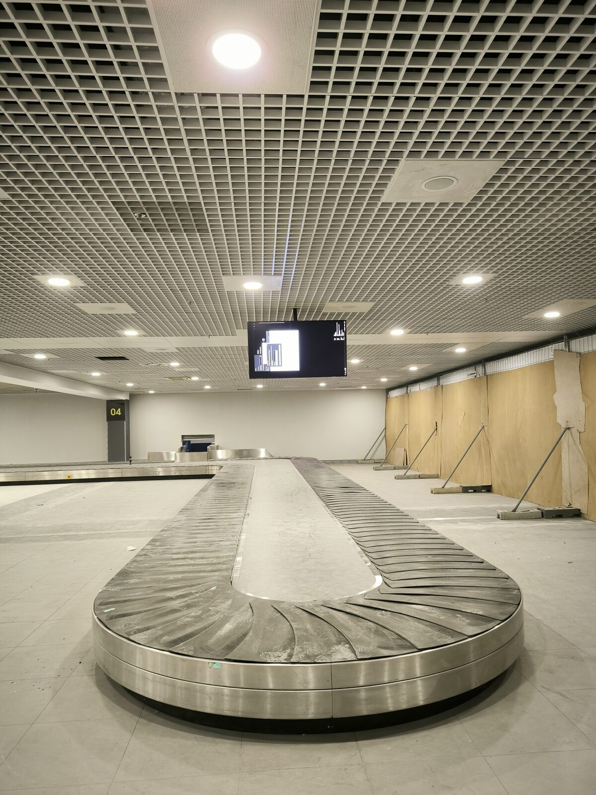

11 video wall sistema
Video zidovi u kontrolnim i operativnim prostorima aerodroma, u četiri konfiguracije: sedam 2x1, dva 2x2, jedan 4x2 i jedan 3x3.

Kao glavni izvođač, TRS je isporučio 11 video wall sistema u okviru Aerodroma Nikola Tesla, uz kontinuirano proširenje Samsung digital signage platforme koja pokreće aerodromski sistem za prikaz informacija o letovima (FIDS).

Savremeni aerodrom oslanja se na dva različita tipa vizuelnih sistema: video wall sisteme u kontrolnim i operativnim prostorima i mrežu ekrana za informisanje putnika u terminalu. Svaki od njih nosi različite zahteve u pogledu formata, pouzdanosti i načina upravljanja.
TRS je angažovan kao glavni izvođač, sa punom odgovornošću za projektovanje, isporuku i instalaciju svih sistema u okviru jednog koordinisanog procesa realizacije. Saradnja traje od 2019. godine i nastavlja se kroz kontinuirano proširenje mreže ekrana.
Rešenje obuhvata kontrolne i operativne prostore aerodroma, kao i putničke zone terminala u kojima se prikazuju informacije o letovima.
Video zidovi u kontrolnim i operativnim prostorima aerodroma, u četiri konfiguracije: sedam 2x1, dva 2x2, jedan 4x2 i jedan 3x3.
Više od 150 ekrana od 55 i 50 inča za prikaz informacija o letovima, na Samsung digital signage platformi.
Puna odgovornost za projektovanje, isporuku i instalaciju svih 11 sistema, realizovanih kao jedinstven i koordinisan proces.
Angažman traje od 2019. godine i nastavlja se kroz proširenje mreže ekrana u skladu sa potrebama aerodroma.
Timelapse prikazuje proces montaže i pripreme ekrana u aerodromskom terminalu.
Različite konfiguracije video zidova prilagođene su prostoru i operativnoj nameni svake pozicije.



Mreža ekrana za prikaz informacija o letovima raspoređena je kroz putničke zone terminala.



Od video zidova u kontrolnim prostorima do ekrana za informisanje putnika, aerodrom ima jednu tačku odgovornosti za sisteme veoma različitih namena i razmera.
FIDS mreža u kontinuiranom radu od 2019. godine proširena je na više od 150 ekrana, što potvrđuje da je arhitektura projektovana za rast.
Četiri različite konfiguracije video zidova u okviru 11 sistema odražavaju pristup po meri: svaka kontrolna tačka dobija format koji odgovara njenoj operativnoj potrebi.